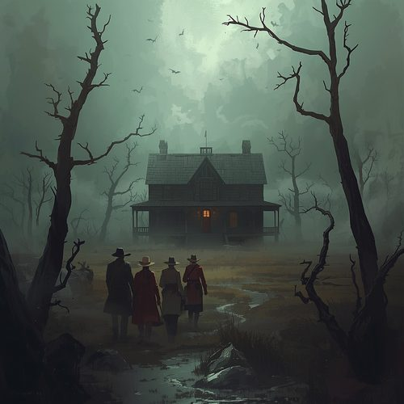
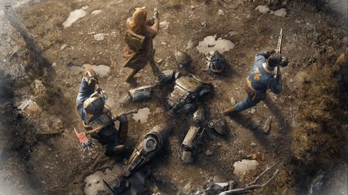
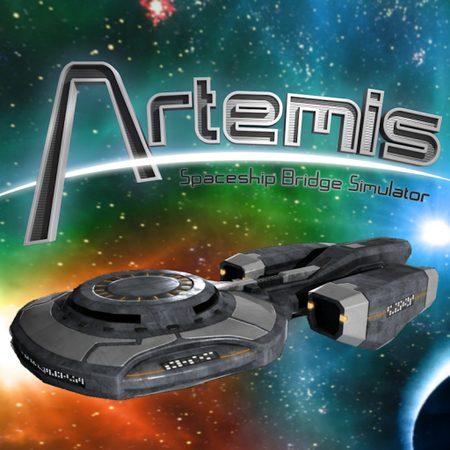

Co vás čeká
 Alice is Missing
Alice is Missing
 Candela Obscura
Candela Obscura
 Cats of Catthulhu
Deadlands
Cats of Catthulhu
Deadlands
 Delta Green
Fallout RPG
Artemis (videohra)
Delta Green
Fallout RPG
Artemis (videohra)
 Ostrov (larp)
Ostrov (larp)
Program pro každého
Ať už jste přišli na turnaj nebo jen v sobotu na skok, vybrat si můžete z pestré nabídky aktivit.
Na programu se teprve pracuje, brzy přidáme více informací. Níže najdete pár příkladů her z loňského ročníku.


